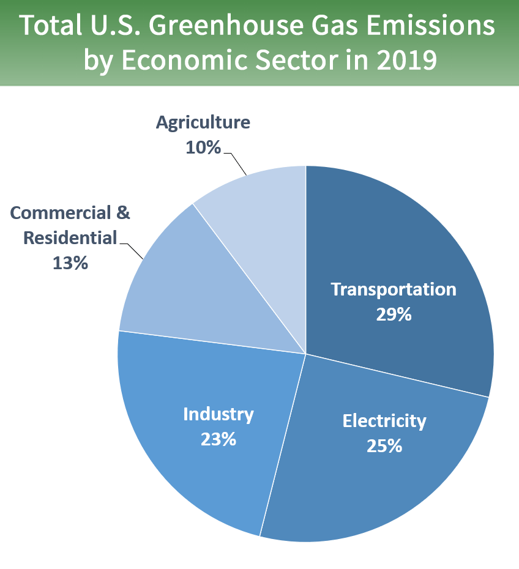

Industrialization has always seemed to be the key to wealth and better living but in reality,
it has been shown that, although it leads to better conditions of living in certain respects,
it affects environment and ultimately contributes to climate change.
Industrialization notonly involves technological innovations, it also involves economic and social transformation
of the human society. With industrialization come opportunities as well as challenges. The
challenges include coping with higher temperatures, extreme weather conditions, changing human
life styles and changing philosophies. Due to these challenges, industrialization must take
into account climate change and its consequences.
For example, changing human life styles
and philosophies have major impacts on environment and this has to be considered. This
study examines the links between industrialization and climate change and attempts to
address some arguments, which always come up when the effects of human activities on climate
change is discussed. Greenhouse gas emissions from industry primarily come from burning fossil
fuels for energy, as well as greenhouse gas emissions from certain chemical reactions necessary
to produce goods from raw materials.